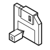

UNOFFICIAL FAN SITE
A PERSONAL ARCHIVE
Aporia FANCAFE
( a fan site for BRAKE MY CASE _ )

UPDATE LOGA PERSONAL ARCHIVE
( a fan site for BRAKE MY CASE _ )

UPDATE LOGSITE GUIDE
作品内で描かれる世界・出来事の時系列、用語
登場キャラクターのプロフィール、スピン、カード、その他の情報
ゲーム内ストーリーを登場キャラクター・ライターから検索
ゲーム内で開催されたイベントの詳細
BGM・パズル音楽・パーソナルソングの情報を製作陣から検索
雑誌掲載・リアルイベントなど、ゲーム外の情報
『スタンドマイヒーローズ』との世界観上の関連・共通点
ABOUT THIS SITE
個人が運営する非公式ファンサイトです。
本サイトは、作品にまつわる情報を整理・記録することを目的とし、
株式会社colyのコンテンツガイドラインを確認のうえ、
『ブレイクマイケース』の画像を使用して制作・運営しています。
使用している画像の転載・配布等はお控えください。
情報のご提供、ご指摘、その他メッセージは、
XのDMまたはWaveboxよりお寄せください。
情報をご提供いただく際は、スクリーンショットの添付、
または出典元の明記にご協力をお願いいたします。
by Aporia fancafe